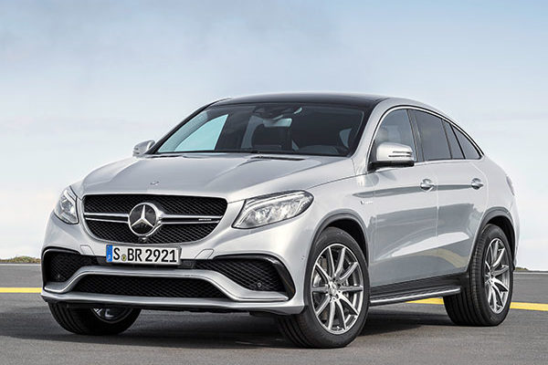
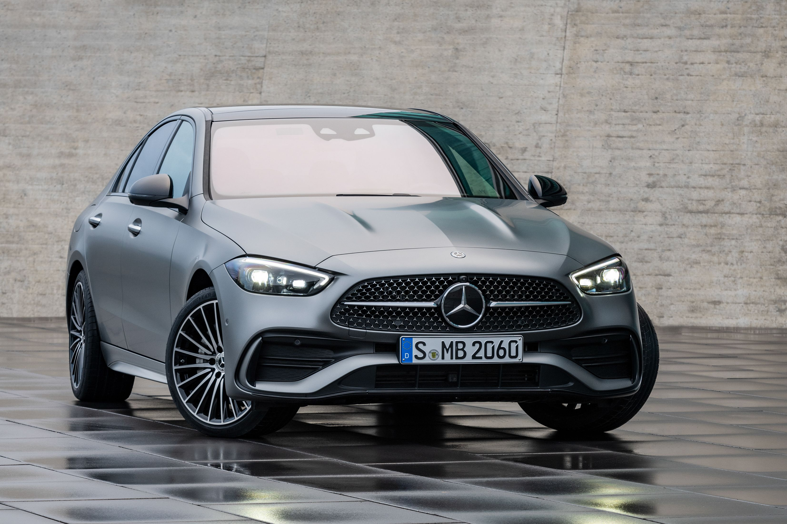
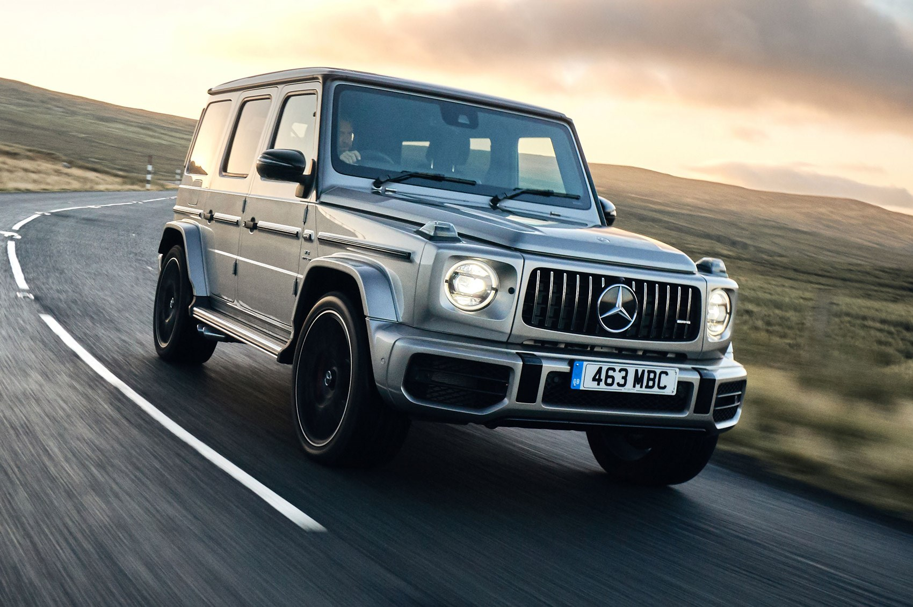
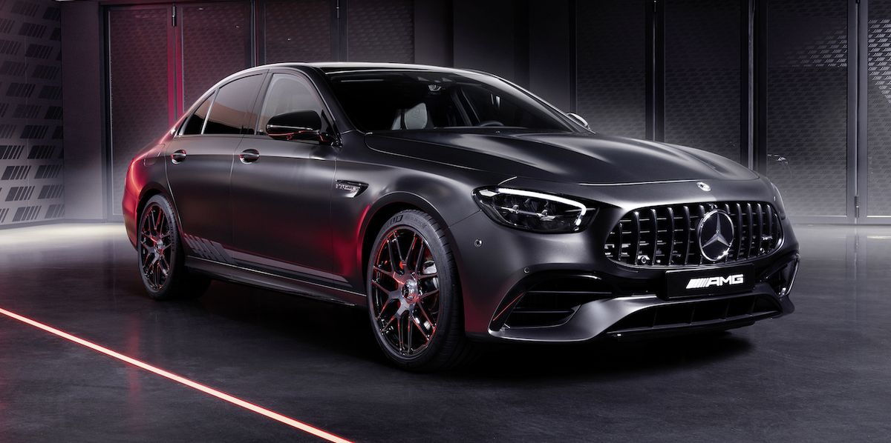
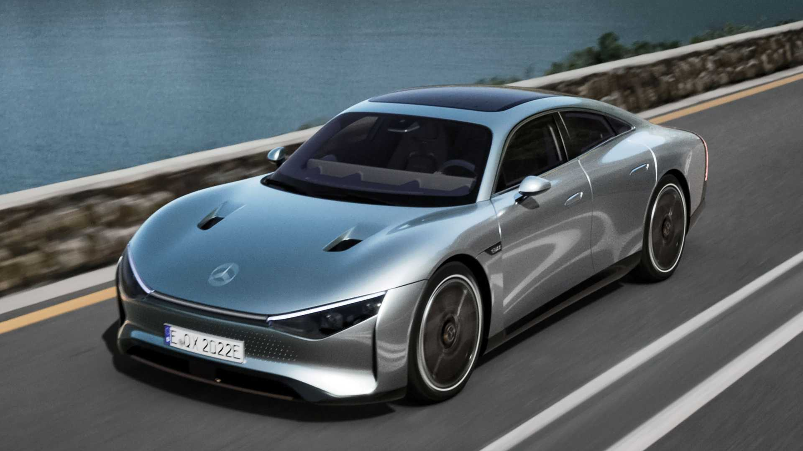

The Mercedes-Benz GLA is a luxury subcompact crossover SUV that first hit the market in 2014. The GLA is based on the same platform as the A-Class and B-Class models from Mercedes-Benz, and it offers a sleek, sporty design that sets it apart from other crossovers in its class. The GLA comes standard with a turbocharged 2.0-liter four-cylinder engine that produces 221 horsepower and 258 pound-feet of torque. The engine is paired with a seven-speed dual-clutch automatic transmission and comes with either front-wheel drive or 4MATIC all-wheel drive. Inside the GLA, drivers and passengers will find a stylish, modern interior that is packed with technology and amenities. The GLA comes standard with a 7-inch touchscreen display, Bluetooth connectivity, and a rearview camera. Higher trims offer features like a larger touchscreen, a panoramic sunroof, and a premium audio system. The GLA is also loaded with safety features, including forward collision warning, automatic emergency braking, and lane departure warning. Higher trims offer additional features like adaptive cruise control and a 360-degree camera system.
Mercedes-Benz GLE

The Mercedes-Benz GLE is a midsize luxury SUV that has been a popular choice among buyers since its introduction in 1997. The GLE is known for its powerful engines, refined ride, and spacious interior. The GLE is available with a range of engines, including a turbocharged 2.0-liter four-cylinder engine, a turbocharged 3.0-liter inline-six engine, and a twin-turbocharged 4.0-liter V8 engine. The engines are paired with a nine-speed automatic transmission, and buyers can choose between rear-wheel drive or 4MATIC all-wheel drive. Inside, the GLE offers a luxurious and spacious cabin that is loaded with technology and amenities. Standard features include a 12.3-inch touchscreen display, Apple CarPlay, Android Auto, and a rearview camera. Higher trims offer additional features like a larger touchscreen, a panoramic sunroof, and a premium audio system. The GLE also comes with a wide range of safety features, including forward collision warning, automatic emergency braking, and lane departure warning. Higher trims offer additional features like adaptive cruise control, a 360-degree camera system, and automatic parking assist.
Mercedes-Benz C-Class

The Mercedes-Benz C-Class is a compact luxury sedan that has been in production since 1993. The C-Class has always been known for its stylish design, advanced technology, and engaging driving dynamics.The C-Class is available with a range of engines, including a turbocharged 2.0-liter four-cylinder engine, a turbocharged 3.0-liter V6 engine, and a twin-turbocharged 4.0-liter V8 engine. The engines are paired with a nine-speed automatic transmission, and buyers can choose between rear-wheel drive or 4MATIC all-wheel drive.Inside, the C-Class offers a luxurious and well-appointed cabin that is packed with technology and features. Standard features include a 10.25-inch touchscreen display, Apple CarPlay, Android Auto, and a rearview camera. Higher trims offer additional features like a larger touchscreen, a panoramic sunroof, and a premium audio system. The C-Class also comes with a wide range of safety features, including forward collision warning, automatic emergency braking, and lane departure warning. Higher trims offer additional features like adaptive cruise control, a 360-degree camera system, and automatic parking assist.
Mercedes-Benz AMG G 63

The Mercedes-Benz AMG G 63 is a high-performance SUV that is the epitome of luxury and power. The AMG G 63 is part of the G-Class, which has been in production since 1979 and has a reputation for being one of the most capable off-road vehicles on the market. Under the hood, the AMG G 63 features a hand-built twin-turbocharged 4.0-liter V8 engine that produces 577 horsepower and 627 lb-ft of torque. The engine is paired with a nine-speed automatic transmission and comes with 4MATIC all-wheel drive. Inside, the AMG G 63 offers a luxurious and spacious cabin that is loaded with technology and features. Standard features include a 12.3-inch touchscreen display, Apple CarPlay, Android Auto, and a rearview camera. Higher trims offer additional features like a larger touchscreen, a panoramic sunroof, and a premium audio system. The AMG G 63 also comes with a wide range of advanced safety features, including adaptive cruise control, lane departure warning, and automatic emergency braking. Additionally, the AMG G 63 features a range of off-road performance features, including three locking differentials, a low-range transfer case, and skid plates.
Mercedes-Benz AMG E 63

The Mercedes-Benz AMG E 63 is a high-performance version of the popular E-Class sedan. The AMG E 63 is known for its incredible power and performance, as well as its luxurious and well-appointed interior. Under the hood, the AMG E 63 features a hand-built twin-turbocharged 4.0-liter V8 engine that produces 603 horsepower and 627 lb-ft of torque. The engine is paired with a nine-speed automatic transmission and comes with 4MATIC all-wheel drive. Inside, the AMG E 63 offers a luxurious and spacious cabin that is loaded with technology and features. Standard features include a 12.3-inch touchscreen display, Apple CarPlay, Android Auto, and a rearview camera. Higher trims offer additional features like a larger touchscreen, a panoramic sunroof, and a premium audio system. The AMG E 63 also comes with a wide range of advanced safety features, including adaptive cruise control, lane departure warning, and automatic emergency braking. Additionally, the AMG E 63 features advanced performance features like an adaptive suspension system and an AMG Performance exhaust system.
Mercedes-Benz EQXX

The Mercedes-Benz EQXX is an upcoming all-electric concept car that is set to revolutionize the automotive industry. The EQXX is expected to be the most technologically advanced vehicle ever produced by Mercedes-Benz, with a focus on achieving maximum range and efficiency. The EQXX is expected to have a range of over 620 miles on a single charge, which would make it one of the most impressive electric vehicles on the market. The car is being developed using advanced aerodynamic design and lightweight materials to help maximize its range. The EQXX is also expected to feature advanced battery technology, including solid-state batteries, which could further increase its range and efficiency. Additionally, the car is expected to feature advanced charging technology, which could allow it to charge in as little as 15 minutes. Mercedes-Benz has not yet released many details about the interior of the EQXX, but it is expected to be luxurious and well-appointed, with advanced technology and features. The car is also expected to feature advanced safety features, including autonomous driving technology.